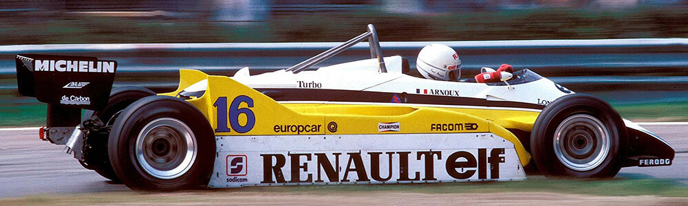
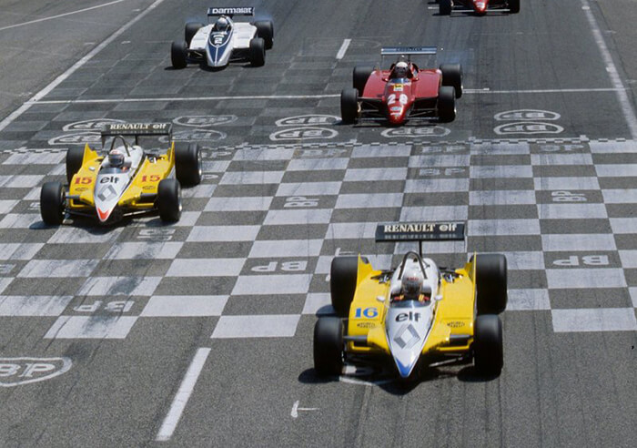

RENAULT: campeonato'82
16René ARNOUX

Última temporada de Arnoux en Renault. Los primeros dos años fueron de mucho desarrollo y sacrificio, pero también de mucho entusiasmo. Incluso, en el inicio de la temporada '80, llegó a ganar dos carreras seguidas. Pero claro, la maldita fiabilidad. Siempre la fiabilidad.
Sin embargo, ese "buen rollo" cambió para él con la llegada de Prost al equipo. 1981 puso en claro que René dejaba de ser el líder del equipo. Era evidente que Prost estaba en otro nivel. La siempre oportuna velocidad de Arnoux le permitía pelear las qualys, pero en carrera Prost era mucho más. En 1982, no sólo se repetía el esquema, sino que el equipo empezó a dejar en claro que se encolumnaba detrás de Prost.
Una victoria que le costó su lugar en el equipo
La situación se volvió muy incómoda para Arnoux. A los múltiples fallos de su coche se sumó el favoritismo del equipo por su compañero. Pero, en este 1982, su nuevo RE30B era realmente veloz. Sin embargo..., la fiabilidad. Luego del podio de Sudáfrica se sucedieron 9 carreras sin puntos. ¡9 carreras! Errores propios, accidentes y fallas mecánicas múltiples lo deben haber frustrado bastante. Tanto es así que cuando se encontró con la posibilidad de ganar el GP de Francia, no la desperdició. Incluso desobedeciendo al equipo, que le pidió que dejara pasar a Prost, quien estaba peleando el campeonato.
Agridulce victoria la de Francia, ya que fue el principio de su fin con el rombo. Su desobediencia no fue bien vista por el equipo. Tanto es así, que un mes y medio después, en el GP de Italia, anunciaba que en 1983 correría para Ferrari. Curiosamente, pudo celebrar el anuncio ganando por última vez con Renault, delante de los tifosis, sus futuros fans.
Arriba